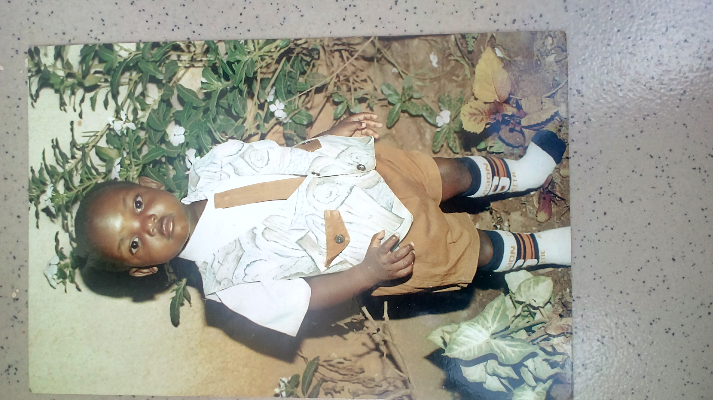
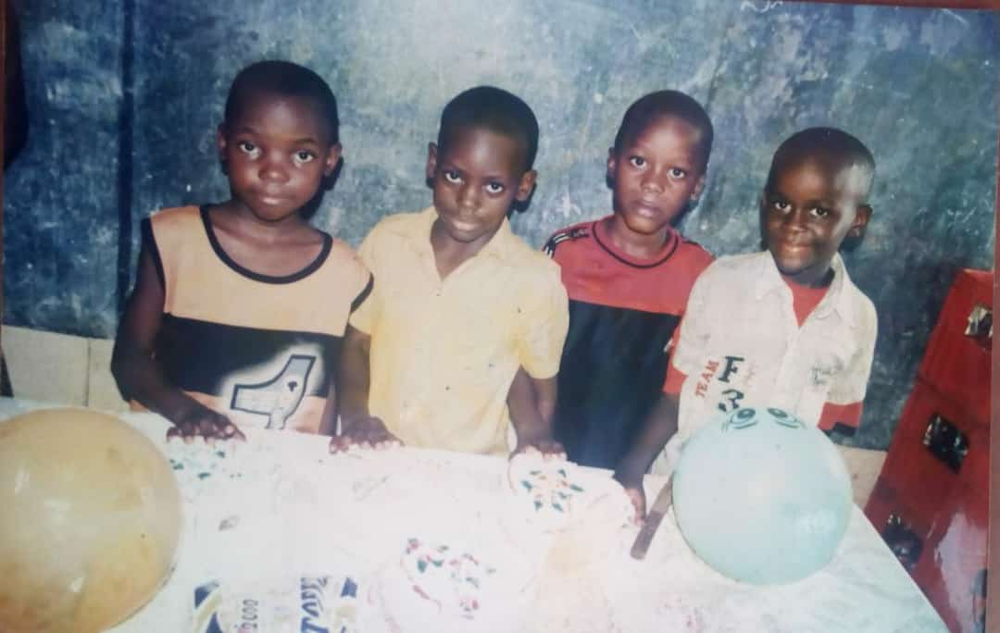
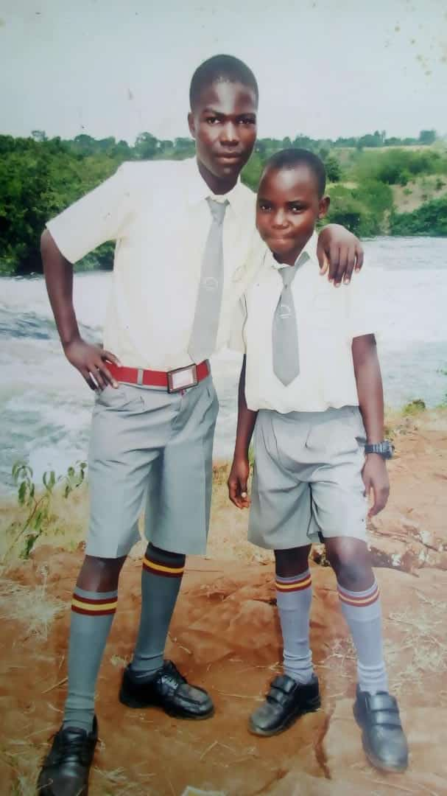
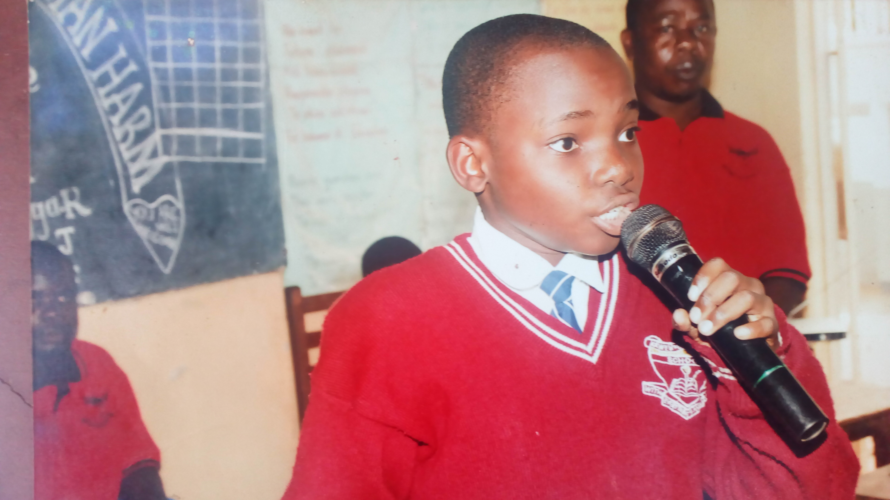
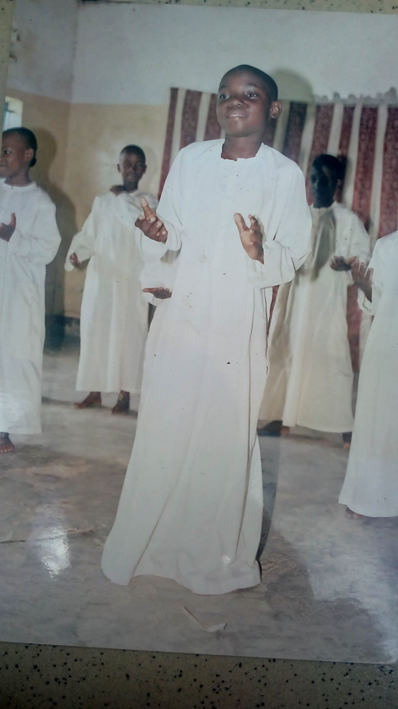

He was born in 1996 to parents Mutebi Suudi kimera and Mutebi Salama Sarah Kaluuba on 9th september. He was born in a family of nine siblings as the fifth of the children in the family. The family lives in a close relationship to both sides of the parents' family as both families are grand in numbers and try to stay in touch with one another. this has created a bond of friendship amongest all the children born of these families and therefore creating a unity of some sort amongest the family memebers from either side of the parents' families.
Nakibinge Ashiraf Kayizzi Hunter Abdul-latif Kimera Mutebi 2 is characterised by a number of traits and hobbies that distinguish him as a person and among these include;

Character traits
Being a good listener
Being friendly
Being helpful
Sees the best in others
Tries to improve others'
Wants whats best for others
Selfless
Compationate
and many other things.
Hobbies
Likes chess
Likes movies
Likes music
Likes gaming
Likes learning new things
Likes travelling
Likes drawing and art
Likes writing
etc.
Education
Pre-school
Went to Happy Hours Primary School till 2008 for classes;
Baby class
He was appointed class prefect by his class teacher.It was at this stage tat he leaned the nasics of education and life through interaction with the class room environment and people from various backgrounds in order to prepare him for the journey of life and all associated challenges and encounters.
Midlle class
At this stage he only attended the class for one term and was promoted onto the next class so thees noting much to say about him at this level.
Top class
At this stage in life,Nakibinge was apoointed assembly conductor as he would lead the school in the anthems followed by the school band.
Primary one
This is where Nakibinge was introduced to the technology of computers in which he picked intreset and excelled beyound his peers.
Primary two
Nakibinge begun to feel out of place at the school when his older brother Shafik left the school and then his family moved from kazo and relocated to matugga
Primary three
Nakibinge fell sick after the completion of the second term of the year and when he healed he never returned to the school because the school had begun to lose its standard of education hence his moving to Kawempe junior school where he was automatically put into the next class.

In Happy Hours primary school,Nakibinge Ashiraf Kayizzi Hunter Abdul-latif Kimera Mutebi 2 attained the basic knowlege in eductaion where he sharpened his early stages of reading, writing, usage of computers and usage of a few musical instruments as a child fresh out of the infant stage of the human growth cycle.
In this school he learned how to be a leader and take charge of others under the leadership positions of class monitor and assembly cordinator.
His friends at happy hours primary school included those seen in the photo with him:
Primary
Joined Kawempe Jumoir School from 2009 to 2012 for classes;
Primary four
This is when Nakibinge joined boarding school in a new school.He was appointed class prefect for his stream.
Primary five
This was the year he met his best freind Kalema and together they topped the class in academics and in music dance and drama
(MDD) under the guidance of teachers like Bukenya Moses and Kalule Abbas.
Primary six
This was when Nakibinge discovered his talent in art and writing poetry under the mentorship of Ssalongo Nangoli Bumaali.This was the same period under which he was the headboy of the school after being appointed at the beginning of the year.
Primary seven
This was Nakibinge's last year in primary(2012) he was moved to the Ttula campus then he and his best friend Micheal topped both campuses of the school academically each with six aggregates in the Primary Leaving Examinations(PLE).

In kawempe junior school is where Nakibinge Ashiraf Kayizzi Hunter Abdul-latif Kimera Mutebi 2 met his bestfriend Kalema Micheal Kateregga Mark with whom theyve grown as close as brothers since 2010 upto date.
They studied together from 2010 to 2012 and both topped their class as the best students of their class in the 2012 Primary Leaving Examinations(PLE)
Together they got involved in performing arts at the school and managed to take on tasks like Debating,dance,and music.
In this school Nakibinge Ashiraf Kayizzi Hunter Abdul-latif Kimera Mutebi 2 further ventured into leadership by taking on various positions of power among which included those where he applied for the positions and those where he was appointed as seen bellow;


Class prefect (For three years-2009 to 2011)
Well fair prefect(For a year-2009)
Deputy headboy(For a year-2010)
Headboy(Appointed for a year-2011)
Head prefect(Appointed for a year-2012)
Middle school
Attended O-level and high-school at Kibuli Secondary School for classes;
Senior one
In 2013 Nakibinge joined secondary school undertaking twenty one(21) subjects including four languages and other areas of study. The change was hectic and tiresome.However there was a bright side to high schools with its new experiences and what not.
Senior two
In 2014 Nakibinge started studying twenty two(22) subjects as commerce was added onto the load he was already studying. on top of that topical tests for each of these subject s became a daily thing in which all students had to excell better than the previous mark or else serve a punishment from the academic committee. The commonest punishment was recieving strokes of the cain.
Senior three
In 2015 the load of subjects Nakibinge had to study reduced to ten with seven complusory ones and three electives.During this period he was appointed into the Kibuli muslim students association(KMSA) a body that that was in charge of all the affairs of muslim students at the school.
Senior four
In 2016 Nakibinge Ashiraf Kayizzi Hunter Abdul-latif Kimera Mutebi 2 attained a certificate of merit form the Ministry of Education for excellence in the UCE Examinations.
Senior five
In 2017 Nakibinge Ashiraf Kayizzi Hunter Abdul-latif Kimera Mutebi 2 joined high-school(HSC) doing arts in a stream of the class known as "Arts-B".In this class he excelled gradually up until the very end.
Senior six
In 2018 Nakibinge Ashiraf Kayizzi Hunter Abdul-latif Kimera Mutebi 2 attained a certificate of merit form the Ministry of Education for excellence in the UACE Examinations. He finished his seconadry education with 19/20 points and joined university at Makerere University Kampala
There's barely much to say about this level in Nakibinge Ashiraf Kayizzi Hunter Abdul-latif Kimera Mutebi 2's life bacause at this level he took a step back from the spotlight of leadership despite being appointed into the Kibuli Muslim Students Association (KMSA),focused on enjoying his adolescent years and learnig new things. it was at this level that he improved his art skills,learned a few languages, attained certificates in education and made a bunch of new friend with whom he takes on new challenges in life.
University
Attended university at Makerere University Kampala from 2019 to date. Here he is undertaking a Bachelors' degree in Library and Information Science (BLIS) under the East African School of Library and Information Science(EASLIS) under the College of Computing and Information Science(CoCIS) being taught by lecturers like Kidaaaga Joshua Justin, Dr.Slyia Namujjuzi among others. Not much has been archieved yet at this level in Nakibinge Ashiraf Kayizzi Hunter Abdul-latif Kimera Mutebi 2's life other than completion of the first and second years in this course of study and the course is still ongoing...